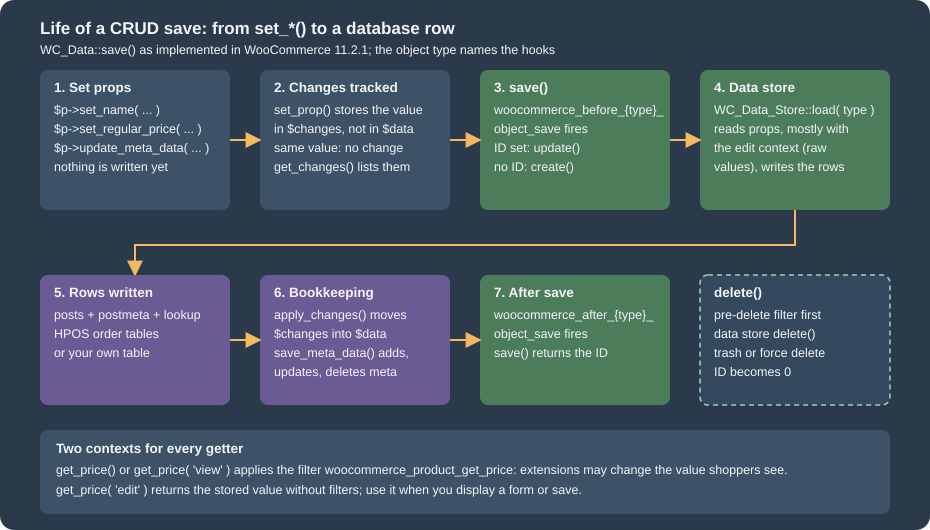
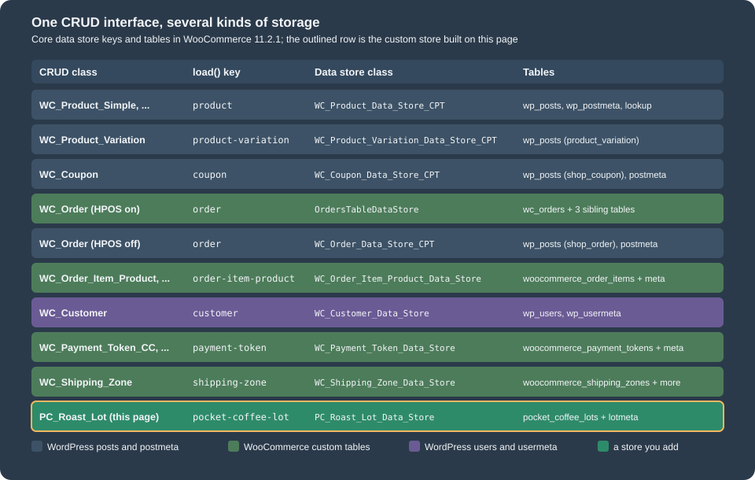

CRUD Objects and Data Stores
|
This content was generated with the assistance of AI and should be verified against the official documentation before being relied on in production. |
Every piece of shop data that WooCommerce manages (a product, a variation, an order, an order line, a coupon, a customer, a
shipping zone, a stored payment token) is handled in PHP as an object with typed getters and setters and two methods,
save() and delete(). The object does not know where it is stored: a second class, the data store, reads and writes
the rows. That split is called the CRUD pattern (create, read, update, delete) and it is the single most important idea for
anyone who writes code that touches shop data, because it is what allowed WooCommerce to move orders out of the posts table
(see HPOS: High-Performance Order Storage) without breaking
extensions that used the objects.
This page was written against WordPress 7.1.3 and WooCommerce 11.2.1 and checked on 2026-10-27. It explains the base class
WC_Data, the way props, changes and contexts work, how meta data is stored, how a data store is found and replaced, and
how wc_get_products() and wc_get_orders() turn arguments into queries. It then builds a complete custom CRUD object, a roast
lot of Pocket Coffee with its own database tables, and lists the pitfalls that were found while running every example. The
Pocket Coffee thread of the whole subsection continues here: the examples create the "Starter kit" and the "Single-origin beans"
variable product, apply the Coffee Club discount in the view context, store the roast date as meta data, and keep the roast
lots of the roastery in tables of their own. For the plugin skeleton, the headers and the compatibility declaration of the
example plugin see Extension Development; for the hooks used here see
Hooks: Actions and Filters.
All code on this page ran in the local test shop (WordPress 7.1.3, WooCommerce 11.2.1, PHP 8.3.36, MariaDB 11.8.9) through
wp eval-file as an administrator, and the outputs are pasted as they were printed. The example plugin passes PHP_CodeSniffer
with the WooCommerce-Core standard. Product SKUs carry the suffix -CRUD (for example PC-KIT-CRUD) because a SKU must be
unique in the shop and the test shop holds products from other examples; the billing address ada-crud@example.test is used for the
same reason. Nothing here needs a WooCommerce.com account.
Why WooCommerce uses CRUD objects
Before WooCommerce 3.0 (2017) a product was a post of type product, an order a post of type shop_order, and plugin code
read and wrote them with get_post_meta(), update_post_meta(), WP_Query and wp_insert_post(). Every extension therefore
depended on the exact table layout. WooCommerce 3.0 introduced CRUD objects and the official guidance has been the same ever
since: use the objects instead of updating meta data directly or working with WordPress post objects. The documentation lists the
benefits:
| Benefit | Meaning |
|---|---|
Structure |
Each object has a defined schema (its props) and keeps its own data valid. |
Control |
WooCommerce controls the flow of data and the validation, so it knows when something changes and can fire hooks and clear caches. |
Ease of development |
You need the names of the props, not the internals of the storage. |
Abstraction |
The storage can move, for example to custom tables, without breaking code that uses the object. HPOS is the proof. |
Unification |
The admin screens, the REST API and the WP-CLI commands all save through the same objects, so a rule added once applies everywhere. |
Simpler code |
Less procedural code and better test coverage. |
The same guidance gives a decision rule for where a custom piece of data should live, which this page applies in the last
section: transients for data that may disappear, the object cache for data that is expensive to recompute, the options table for
a small setting that always exists, a post type for an entity with many units, a taxonomy to classify things, and WC_Logger for
log lines.
The shape of a CRUD object
All CRUD objects extend WC_Data (includes/abstracts/abstract-wc-data.php). The class carries the state and the machinery;
a subclass declares its props and adds the getters and setters. Products, orders, coupons, customers, shipping zones and
payment tokens reach WC_Data through a WC_Abstract_Legacy_* or WC_Legacy_* compatibility class that keeps the
pre-3.0 magic properties working ($product->id, $order->billing_email); order items and your own objects extend it directly.
The diagram shows the objects; the next one shows the other half, the data stores that persist them. Both are developed in the sections below.
WC_Data declares these properties; a subclass sets the ones it needs.
| Property | Default | Role |
|---|---|---|
|
|
The object ID. |
|
|
The props and their default values: the schema of the object. Every key needs a getter and a setter. |
|
|
More props, merged into |
|
copy of |
Set by the constructor so that |
|
|
Props that were set after the object was read. This is what |
|
|
|
|
|
Names the hooks: |
|
|
The |
|
|
Enables the meta cache of the object (see the meta data section). Empty means no caching. |
|
|
The lazily loaded array of |
|
|
What |
|
|
Props that older data stores kept as meta data and that moved to columns. Calls such as |
The public surface of WC_Data in 11.2.1 is small enough to list completely:
| Method | Purpose |
|---|---|
|
Merges |
|
The object ID. |
|
Props, meta data and the ID as an array ( |
|
The prop names. |
|
Calls |
|
The pending changes, and the merge of the changes into |
|
Creates or updates through the data store, fires the two save actions and returns the ID. |
|
Deletes through the data store, sets the ID to |
|
The |
|
Meta data in memory; nothing is written until |
|
Load the meta rows through the data store, build the |
|
Helpers of the meta cache. |
|
Reset to defaults and control whether changes are tracked. |
|
The clone behaviour described above. |
A subclass uses four protected helpers: get_prop( $prop, $context ) and set_prop( $prop, $value ) for the props,
set_date_prop( $prop, $value ) for dates, and error( $code, $message, $http_status_code, $data ), which throws a
WC_Data_Exception unless the object is being read from the database.
Getters, setters, changes and contexts
Each key of $data has a getter and a setter. The built-in objects follow one convention, and your own objects should too:
-
get_<prop>( $context = 'view' )returns$this->get_prop( '<prop>', $context ). -
set_<prop>( $value )validates and sanitises, then calls$this->set_prop( '<prop>', $value ). A setter throws aWC_Data_Exceptionthrougherror()when the value is unacceptable. -
Dates are stored as
WC_DateTimeobjects throughset_date_prop(), which accepts a timestamp (UTC), a string (site time zone), an ISO 8601 string with an offset, or aWC_DateTime, and treats an empty value or0000-00-00 00:00:00asnull.
Tracking changes
set_prop() does not write to $data once the object has been read. It compares the new value with the stored one and, only if
they differ, records it in $changes. get_prop() then answers from $changes first. This is how save() can write only the
columns that changed, and how code can ask what is about to change. The first example uses the "Starter kit" product that the
catalogue section creates below.
<?php
$kit = wc_get_product( wc_get_product_id_by_sku( 'PC-KIT-CRUD' ) );
$kit->set_regular_price( '22.50' );
$kit->set_name( 'Starter kit' ); // same value as before: not a change
$kit->set_stock_quantity( 38 );
echo 'changes: ', wp_json_encode( $kit->get_changes() ), "\n";
echo 'price in DB: ', get_post_meta( $kit->get_id(), '_regular_price', true ), " (before save)\n";
echo 'price on object: ', $kit->get_regular_price(), "\n";
$kit->save();
echo 'price in DB: ', get_post_meta( $kit->get_id(), '_regular_price', true ), " (after save)\n";
echo 'changes: ', wp_json_encode( $kit->get_changes() ), "\n";changes: {"regular_price":"22.50","stock_quantity":38}
price in DB: 24.00 (before save)
price on object: 22.50
price in DB: 22.50 (after save)
changes: []Three observations follow from the output. set_name( 'Starter kit' ) with the value the product already had recorded no change.
The database still held the old price while the object already answered with the new one, so a setter without save() is
a no-op for everyone else. And after save() the changes are applied and the array is empty, so a second save() writes nothing.
While an object is being constructed or re-read ($object_read is false) setters write straight to $data, which is why a data
store can fill an object with set_props() without creating changes.
The view and edit contexts
Every getter takes a context. view (the default) is for output: get_prop() passes the value through the filter
woocommerce_{object_type}_get_{prop}, so an extension may change it. edit returns the stored value untouched and is the one to use when
you fill a form field, compare values or save. The prefix is built by get_hook_prefix(), and a few classes override it:
<?php
// A key that is not registered falls back to the part before the first dash.
echo 'product-subscription -> ', WC_Data_Store::load( 'product-subscription' )->get_current_class_name(), "\n";
echo 'product-variable -> ', WC_Data_Store::load( 'product-variable' )->get_current_class_name(), "\n";
try {
WC_Data_Store::load( 'invoice' );
} catch ( Exception $e ) {
echo 'invoice -> ', get_class( $e ), ': ', $e->getMessage(), "\n";
}
// Methods that are not part of the interface are passed through to the store.
$store = WC_Data_Store::load( 'product' );
echo "has_callable( 'get_internal_meta_keys' ): ", var_export( $store->has_callable( 'get_internal_meta_keys' ), true ), "\n";
echo "has_callable( 'no_such_method' ): ", var_export( $store->has_callable( 'no_such_method' ), true ), "\n";
// Swap a store with the filter that WooCommerce itself uses for orders.
add_filter(
'woocommerce_coupon_data_store',
static function ( $store ) {
echo 'filter received: ', is_object( $store ) ? get_class( $store ) : $store, "\n";
return $store;
}
);
$class = WC_Data_Store::load( 'coupon' )->get_current_class_name();
echo 'coupon store: ', $class, "\n";
// The prefix of the view-context filters of each object type.
$objects = array(
'product' => new WC_Product_Simple(),
'variation' => new WC_Product_Variation(),
'order' => new WC_Order(),
'coupon' => new WC_Coupon(),
'customer' => new WC_Customer(),
'lot' => new PC_Roast_Lot(),
);
foreach ( $objects as $label => $object ) {
$method = new ReflectionMethod( $object, 'get_hook_prefix' );
$method->setAccessible( true );
printf( "%-10s %s<prop>\n", $label, $method->invoke( $object ) );
}product-subscription -> WC_Product_Data_Store_CPT
product-variable -> WC_Product_Variable_Data_Store_CPT
invoice -> Exception: Invalid data store.
has_callable( 'get_internal_meta_keys' ): true
has_callable( 'no_such_method' ): false
filter received: WC_Coupon_Data_Store_CPT
coupon store: WC_Coupon_Data_Store_CPT
filter received: WC_Coupon_Data_Store_CPT
product woocommerce_product_get_<prop>
variation woocommerce_product_variation_get_<prop>
order woocommerce_order_get_<prop>
coupon woocommerce_coupon_get_<prop>
customer woocommerce_customer_get_<prop>
lot woocommerce_pocket_coffee_lot_get_<prop>The Coffee Club discount shows the contexts at work. The filter below takes 10% off the price of anything in the Beans category, but only for display code that uses the default context. Variations have their own prefix, so the same callback is registered twice.
<?php
require_once WP_PLUGIN_DIR . '/pocket-coffee-crud/demo/catalog.php'; // for pocket_coffee_crud_category()
/**
* Coffee Club: 10% off the beans, applied in the view context only.
*
* @param string $price Price.
* @param WC_Product $product Product or variation.
* @return string
*/
function pocket_coffee_crud_club_price( $price, $product ) {
$product_id = $product->get_parent_id() ? $product->get_parent_id() : $product->get_id();
return has_term( pocket_coffee_crud_category( 'Beans' ), 'product_cat', $product_id ) ? wc_format_decimal( (float) $price * 0.9, 2 ) : $price;
}
add_filter( 'woocommerce_product_get_price', 'pocket_coffee_crud_club_price', 10, 2 );
add_filter( 'woocommerce_product_variation_get_price', 'pocket_coffee_crud_club_price', 10, 2 );
$beans = wc_get_product( wc_get_product_id_by_sku( 'PC-BEANS-CRUD' ) );
$variation = wc_get_product( $beans->get_children()[0] );
printf( "view : %s\n", $variation->get_price() ); // 9.90 - 10% = 8.91
printf( "edit : %s\n", $variation->get_price( 'edit' ) ); // 9.90
printf( "hook : %s\n", has_filter( 'woocommerce_product_variation_get_price' ) ? 'woocommerce_product_variation_get_price' : '-' );view : 8.91
edit : 9.90
hook : woocommerce_product_variation_get_priceThe first variation, Ethiopia 250 g, costs 9.90 EUR in the catalogue; the shopper sees 8.91 EUR. A price filter like this one is a
teaching device: real discounts belong to coupons and pricing rules because a get_price filter also changes what the cart and
the REST API report (see Taxes, Coupons, Currencies and i18n).
A filter on a view-context getter must be safe to run at any time. In the test shop a smoke-test plugin appended a suffix to the product name in
woocommerce_product_get_name; products created while it was active were stored with the suffix in their title, because the
product data store builds post_title with get_name() (view context) when it creates a product, whereas the update path
uses get_name( 'edit' ) (class-wc-product-data-store-cpt.php, lines 214 and 332 in 11.2.1). The examples on this page were
run with that plugin skipped (--skip-plugins). If a filter changes values that are also saved, skip it when the request writes
(for example when is_admin() or wp_is_serving_rest_request() is true, or while a save action is running).
Errors from setters and set_props
A setter that rejects a value calls error(), which throws WC_Data_Exception. The exception carries an error code
(getErrorCode()), a message, an HTTP status as its code (getCode(), 400 by default) and an array of extra data. A SKU that already exists is
rejected in the setter, not at save():
<?php
try {
$duplicate = new WC_Product_Simple();
$duplicate->set_sku( 'PC-KIT-CRUD' ); // the SKU of an existing product
} catch ( WC_Data_Exception $e ) {
printf( "%s | %s | http %d\n", $e->getErrorCode(), $e->getMessage(), $e->getCode() );
}
$product = new WC_Product_Simple();
$result = $product->set_props(
array(
'name' => 'Broken',
'sku' => 'PC-KIT-CRUD',
'regular_price' => '5',
)
);
if ( is_wp_error( $result ) ) {
echo 'set_props collected: ', implode( ', ', $result->get_error_codes() ), "\n";
}
printf( "the other props were set: name=%s price=%s sku='%s'\n", $product->get_name( 'edit' ), $product->get_regular_price(), $product->get_sku( 'edit' ) );product_invalid_sku | Invalid or duplicated SKU. | http 400
set_props collected: product_invalid_sku
the other props were set: name=Broken price=5 sku=''set_props() is the bulk version. It does not stop at the first error: the other props are set, and the errors come back as one
WP_Error. It is the right call when you fill an object from user input and want to report every invalid field at once.
Creating, saving and deleting
save() creates or updates depending on the ID, and wraps the data store call in two actions:
public function save() {
if ( ! $this->data_store ) {
return $this->get_id();
}
do_action( 'woocommerce_before_' . $this->object_type . '_object_save', $this, $this->data_store );
if ( $this->get_id() ) {
$this->data_store->update( $this );
} else {
$this->data_store->create( $this );
}
do_action( 'woocommerce_after_' . $this->object_type . '_object_save', $this, $this->data_store );
return $this->get_id();
}The data store is responsible for writing, for calling apply_changes() and save_meta_data(), and for firing the type-specific actions
(woocommerce_new_product, woocommerce_update_order, …). The figure follows one save from the setter to the row.

delete( $force_delete = false ) first runs the filter woocommerce_pre_delete_{type} (added in 8.1.0, named after
pre_delete_post): a callback that returns something other than null cancels the deletion and its value is returned.
Otherwise the data store deletes the object and the object’s ID becomes 0. For posts-based objects false moves to the trash
and true deletes permanently; objects without a trash ignore the argument. Trashed products stay readable.
<?php
$temporary = new WC_Product_Simple();
$temporary->set_name( 'Temporary' );
$temporary->set_sku( 'PC-TMP-CRUD' );
$id = $temporary->save();
$temporary->delete(); // trash
printf( "after delete(): post status %s, object id %d\n", get_post_status( $id ), $temporary->get_id() );
$again = wc_get_product( $id ); // still readable
printf( "wc_get_product(): status %s\n", $again->get_status() );
$again->delete( true ); // permanent
printf( "after delete(true): post exists %s\n", var_export( (bool) get_post( $id ), true ) );after delete(): post status trash, object id 0
wc_get_product(): status trash
after delete(true): post exists falseCreating the Pocket Coffee catalogue with CRUD objects
The code below creates the two Pocket Coffee products with objects only, and it is also the module used by the later examples
(pocket-coffee-crud/demo/catalog.php). The "Starter kit" is a WC_Product_Simple. The "Single-origin beans" product is a
WC_Product_Variable with two attributes (origin and size) built from WC_Product_Attribute objects, and one
WC_Product_Variation per combination. Only two sizes are created here (250 g and 1 kg, 6 variations); the full catalogue of 18
variations adds the grind attribute the same way. Prices follow the shop definition: 8.90 EUR per 250 g, 29.90 EUR per kilogram,
Ethiopia 1.00 EUR more per 250 g.
<?php
/**
* Pocket Coffee catalogue built with CRUD objects only.
*
* @package PocketCoffee\Crud
*/
/**
* Returns the ID of a product category, creating it when it does not exist.
*
* @param string $name Category name.
* @return int
*/
function pocket_coffee_crud_category( $name ) {
$term = term_exists( $name, 'product_cat' );
if ( ! $term ) {
$term = wp_insert_term( $name, 'product_cat' );
}
return (int) ( is_array( $term ) ? $term['term_id'] : $term );
}
/**
* Creates the "Starter kit" simple product and returns its ID.
*
* @return int
*/
function pocket_coffee_crud_create_starter_kit() {
$product = new WC_Product_Simple();
$product->set_name( 'Starter kit' );
$product->set_slug( 'starter-kit-crud' );
$product->set_sku( 'PC-KIT-CRUD' );
$product->set_regular_price( '24.00' );
$product->set_short_description( 'Hand grinder plus 250 g of beans.' );
$product->set_weight( '1.25' );
$product->set_manage_stock( true );
$product->set_stock_quantity( 40 );
$product->set_category_ids( array( pocket_coffee_crud_category( 'Equipment' ) ) );
$product->update_meta_data( 'roast_date', '2026-10-26' );
return $product->save();
}
/**
* Creates the "Single-origin beans" variable product with origin x size variations.
*
* @return int
*/
function pocket_coffee_crud_create_beans() {
$origins = array( 'Ethiopia Yirgacheffe', 'Colombia Huila', 'Brazil Cerrado' );
$sizes = array(
'250 g' => array(
'code' => '250',
'kg' => '0.25',
'price' => 8.90,
'units' => 1,
),
'1 kg' => array(
'code' => '1000',
'kg' => '1',
'price' => 29.90,
'units' => 4,
),
);
$origin = new WC_Product_Attribute();
$origin->set_name( 'Origin' );
$origin->set_options( $origins );
$origin->set_position( 0 );
$origin->set_visible( true );
$origin->set_variation( true );
$size = new WC_Product_Attribute();
$size->set_name( 'Size' );
$size->set_options( array_keys( $sizes ) );
$size->set_position( 1 );
$size->set_visible( true );
$size->set_variation( true );
$beans = new WC_Product_Variable();
$beans->set_name( 'Single-origin beans' );
$beans->set_slug( 'single-origin-beans-crud' );
$beans->set_sku( 'PC-BEANS-CRUD' );
$beans->set_category_ids( array( pocket_coffee_crud_category( 'Beans' ) ) );
$beans->set_attributes( array( $origin, $size ) );
$beans_id = $beans->save();
foreach ( $origins as $origin_name ) {
foreach ( $sizes as $size_name => $def ) {
// Ethiopia costs 1.00 EUR more for every 250 g.
$price = $def['price'] + ( 0 === strpos( $origin_name, 'Ethiopia' ) ? $def['units'] * 1.0 : 0 );
$variation = new WC_Product_Variation();
$variation->set_parent_id( $beans_id );
$variation->set_attributes(
array(
'origin' => $origin_name,
'size' => $size_name,
)
);
$variation->set_sku( 'PC-' . strtoupper( substr( $origin_name, 0, 3 ) ) . '-' . $def['code'] . '-CRUD' );
$variation->set_regular_price( wc_format_decimal( $price, 2 ) );
$variation->set_weight( $def['kg'] );
$variation->set_manage_stock( true );
$variation->set_stock_quantity( 25 );
$variation->save();
}
}
// Recalculate the parent price range and stock status from the variations.
WC_Product_Variable::sync( $beans_id );
return $beans_id;
}The notable points are the order of the calls and the data that WooCommerce keeps for you:
-
set_attributes()takesWC_Product_Attributeobjects. A local attribute (ID 0) keeps its options as plain strings. A global attribute has a non-zero ID (the ID of the attribute taxonomy), the taxonomy name (pa_origin) as its name, and term IDs as options;is_taxonomy()is simply "the ID is greater than zero". -
A variation needs the parent ID (
set_parent_id()) beforesave(), and its attributes are keyed by the sanitised attribute name (origin,size), with the exact option string as value. -
WC_Product_Variable::sync( $id )recalculates the price range and the stock status of the parent from its variations, synchronises the attributes, fireswoocommerce_variable_product_sync_dataand saves the parent. The example calls it once after the last variation, so the parent reports the range straight away. -
set_category_ids()writes term relationships; the helper reuses a category when one with the same name exists, which is what a shop wants. -
Stock fields (
set_manage_stock(),set_stock_quantity()) feed the lookup tablewc_product_meta_lookup, shown below.
<?php
require_once WP_PLUGIN_DIR . '/pocket-coffee-crud/demo/catalog.php';
$kit_id = pocket_coffee_crud_create_starter_kit();
$beans_id = pocket_coffee_crud_create_beans();
echo "kit=$kit_id beans=$beans_id\n";
$kit = wc_get_product( $kit_id );
printf(
"%s | %s | price %s | stock %d | categories %s | roast_date %s\n",
get_class( $kit ),
$kit->get_name( 'edit' ),
$kit->get_price(),
$kit->get_stock_quantity(),
implode( ',', $kit->get_category_ids() ),
$kit->get_meta( 'roast_date' )
);
$beans = wc_get_product( $beans_id );
printf(
"%s | variations %d | from %s to %s\n",
get_class( $beans ),
count( $beans->get_children() ),
$beans->get_variation_price( 'min' ),
$beans->get_variation_price( 'max' )
);
foreach ( $beans->get_children() as $variation_id ) {
$variation = wc_get_product( $variation_id );
printf( " %d %-18s %6s %s\n", $variation_id, $variation->get_sku(), $variation->get_regular_price(), wp_json_encode( $variation->get_attributes() ) );
}kit=337 beans=338
WC_Product_Simple | Starter kit | price 24.00 | stock 40 | categories 24 | roast_date 2026-10-26
WC_Product_Variable | variations 6 | from 8.90 to 33.90
339 PC-ETH-250-CRUD 9.90 {"origin":"Ethiopia Yirgacheffe","size":"250 g"}
340 PC-ETH-1000-CRUD 33.90 {"origin":"Ethiopia Yirgacheffe","size":"1 kg"}
341 PC-COL-250-CRUD 8.90 {"origin":"Colombia Huila","size":"250 g"}
342 PC-COL-1000-CRUD 29.90 {"origin":"Colombia Huila","size":"1 kg"}
343 PC-BRA-250-CRUD 8.90 {"origin":"Brazil Cerrado","size":"250 g"}
344 PC-BRA-1000-CRUD 29.90 {"origin":"Brazil Cerrado","size":"1 kg"}The variable product reports a price range from 8.90 to 33.90 EUR (Colombia and Brazil 250 g, up to Ethiopia 1 kg), and the six variations are real products with their own SKU, price and attributes. Exact IDs vary from run to run.
Meta data
Anything that is not a prop of the object is meta data: a key and a value, stored by the data store in the meta table of the
object (wp_postmeta for products and coupons, wp_wc_orders_meta for orders with HPOS, wp_usermeta for customers, the
woocommerce_*meta tables for order items and payment tokens). The methods work on an in-memory array of WC_Meta_Data
objects and persist at save():
| Method | Behaviour |
|---|---|
|
Appends a row. With |
|
Updates the first row with that key (or the row with that meta ID) and marks the other rows with the same key for deletion; adds the row when none exists. |
|
Marks all rows with the key for deletion. |
|
Marks rows by exact value or by meta ID. |
|
The first value (empty string when missing) or, with |
|
|
|
All |
|
Writes only the meta changes (insert, update, delete) and fires |
|
Loads the rows; called lazily by the first meta call. |
<?php
$kit_id = wc_get_product_id_by_sku( 'PC-KIT-CRUD' );
$kit = wc_get_product( $kit_id );
$kit->add_meta_data( 'origin_note', 'Ethiopia Yirgacheffe', true ); // unique: replaces earlier rows
$kit->add_meta_data( 'batch', 'B-2026-10' ); // not unique: may repeat
$kit->add_meta_data( 'batch', 'B-2026-11' );
$kit->update_meta_data( 'roast_date', '2026-10-27' );
echo 'before save, row exists: ', var_export( metadata_exists( 'post', $kit_id, 'origin_note' ), true ), "\n";
$kit->save();
echo 'after save, row exists: ', var_export( metadata_exists( 'post', $kit_id, 'origin_note' ), true ), "\n";
echo 'roast_date: ', $kit->get_meta( 'roast_date' ), "\n";
echo 'batch (first): ', $kit->get_meta( 'batch' ), "\n";
echo 'batch (all): ', wp_json_encode( array_values( array_map( static fn( $m ) => $m->value, $kit->get_meta( 'batch', false ) ) ) ), "\n";
echo 'missing key: ', var_export( $kit->get_meta( 'nope' ), true ), ' / exists: ', var_export( $kit->meta_exists( 'nope' ), true ), "\n";
foreach ( $kit->get_meta_data() as $meta ) {
echo ' ', wp_json_encode( $meta->get_data() ), "\n";
}
$kit->delete_meta_data( 'batch' );
$kit->save_meta_data(); // meta only: no product row update, no save hooks
echo 'batch after delete: ', wp_json_encode( $kit->get_meta( 'batch', false ) ), "\n";before save, row exists: false
after save, row exists: true
roast_date: 2026-10-27
batch (first): B-2026-10
batch (all): ["B-2026-10","B-2026-11"]
missing key: '' / exists: false
{"id":4226,"key":"roast_date","value":"2026-10-27"}
{"key":"origin_note","value":"Ethiopia Yirgacheffe","id":4384}
{"key":"batch","value":"B-2026-10","id":4385}
{"key":"batch","value":"B-2026-11","id":4386}
batch after delete: []Nothing reached the database before save(). A key can repeat (batch) and get_meta( 'batch', false ) returns every row; the array
keys of that result are positions in the full meta array, which is why the example reindexes it. A missing key answers '', so code that
must tell "missing" from "empty" uses meta_exists(). save_meta_data() is the right call when only meta data changed, because it
skips the product row update and its hooks.
Source: WooCommerce docs: CRUD objects
Internal meta keys and the lookup table
Props that the data store keeps in meta data are called internal meta keys (_sku, _price, _stock …). The product store has 45 of them in
11.2.1. They are hidden from get_meta_data() and a call such as get_meta( '_sku' ) is answered by the getter (and reported with
wc_doing_it_wrong() when WP_DEBUG is on), so use get_sku(). The data store also maintains the lookup table
wc_product_meta_lookup, which is what the price, stock and SKU filters of wc_get_products() and the catalogue sort use:
<?php
$kit = wc_get_product( wc_get_product_id_by_sku( 'PC-KIT-CRUD' ) );
$keys = WC_Data_Store::load( 'product' )->get_internal_meta_keys();
echo count( $keys ), ' internal keys, e.g. ', implode( ', ', array_slice( $keys, 0, 6 ) ), "\n";
echo "get_meta( '_sku' ) -> ", $kit->get_meta( '_sku' ), " (answered by get_sku())\n";
global $wpdb;
echo 'postmeta: ', $wpdb->get_var( $wpdb->prepare( "SELECT meta_value FROM $wpdb->postmeta WHERE post_id = %d AND meta_key = 'roast_date'", $kit->get_id() ) ), "\n";
echo 'lookup: ', wp_json_encode( $wpdb->get_row( $wpdb->prepare( "SELECT product_id, sku, min_price, max_price, stock_quantity, stock_status FROM {$wpdb->prefix}wc_product_meta_lookup WHERE product_id = %d", $kit->get_id() ), ARRAY_A ) ), "\n";45 internal keys, e.g. _visibility, _sku, _global_unique_id, _price, _regular_price, _sale_price
get_meta( '_sku' ) -> PC-KIT-CRUD (answered by get_sku())
postmeta: 2026-10-27
lookup: {"product_id":"337","sku":"PC-KIT-CRUD","min_price":"22.5000","max_price":"22.5000","stock_quantity":"38","stock_status":"instock"}Meta data written through update_meta_data() is also a post meta row (roast_date), because products still live in
wp_posts. This is an implementation detail of one data store, and it is the reason to keep using the object: orders keep their meta
in a different table since HPOS, and your code does not change.
The meta cache
When $cache_group is not empty, read_meta_data() reads the raw rows from the object cache under a key built by
generate_meta_cache_key() (the group’s invalidation prefix plus the object prefix plus object_meta_<id>) and save_meta_data() deletes
the key. A persistent object cache (Redis, Memcached) therefore saves one query per object read. prime_raw_meta_data_cache() lets
bulk readers fill the cache for many objects at once. Your own objects get the same behaviour by setting $cache_group, as the roast lot
does.
Data stores
A data store is the class that knows the storage. WC_Data_Store::load( $object_type ) finds it, and the object’s constructor calls
$this->data_store = WC_Data_Store::load( 'product' ). The loader is a thin proxy: read(), create(), update() and delete() go to
the instance; read_multiple() goes to the store’s own bulk reader when it has one; other methods pass through __call(), and
has_callable() tells whether the store implements a method. The store class must implement WC_Object_Data_Store_Interface
(create, read, update, delete, read_meta, delete_meta, add_meta, update_meta); the specialised interfaces
(WC_Product_Data_Store_Interface, WC_Order_Data_Store_Interface and so on) add what each object type needs.
The core registry ($stores, filtered by woocommerce_data_stores) maps keys to classes:
| Key | Class in 11.2.1 | Storage |
|---|---|---|
|
|
|
|
|
The four HPOS tables, or |
|
|
|
|
|
|
|
|
|
|
|
|
|
|
|
|
|
|
|
|
|
Analytics add report-* and admin-note keys of their own (classes named DataStore in the Automattic\WooCommerce\Admin namespace). In the test shop
the registry held 40 entries after the filter: 22 core keys and 18 of the analytics kind.

How a store is found, and how to replace one, follows from the constructor of WC_Data_Store:
-
The registry is passed through
woocommerce_data_stores. This is where a plugin adds a new key (the roast lot below) or replaces the class of an existing one. -
When the key is missing the loader tries the part before the first dash, so
product-subscriptionuses theproductstore. An unknown key throws anExceptionwith the message "Invalid data store." -
The resulting class name (or object) goes through
woocommerce_{key}_data_store. HPOS uses exactly this hook, at priority 999, to answerOrdersTableDataStoreorWC_Order_Data_Store_CPTfor the keyorder. A filter may return an object, which must implementWC_Object_Data_Store_Interface.
product-subscription -> WC_Product_Data_Store_CPT
product-variable -> WC_Product_Variable_Data_Store_CPT
invoice -> Exception: Invalid data store.
has_callable( 'get_internal_meta_keys' ): true
has_callable( 'no_such_method' ): false
filter received: WC_Coupon_Data_Store_CPT
coupon store: WC_Coupon_Data_Store_CPT
filter received: WC_Coupon_Data_Store_CPT
product woocommerce_product_get_<prop>
variation woocommerce_product_variation_get_<prop>
order woocommerce_order_get_<prop>
coupon woocommerce_coupon_get_<prop>
customer woocommerce_customer_get_<prop>
lot woocommerce_pocket_coffee_lot_get_<prop>The first lines of the output above are the fallback, the exception, and has_callable(); the filter ran for every load of the coupon store.
Replacing a core store is allowed but risky: the replacement must implement every method that the object and the REST layer call, and
HPOS shows how much that is for orders. Extending the core class and overriding single methods, or hooking the actions the store
fires, is the safer way.
Querying objects
Code that needs a list of objects uses a query class instead of WP_Query or SQL: wc_get_products() (and WC_Product_Query) for products,
wc_get_orders() (and WC_Order_Query) for orders, and the equivalents for other types. All of them derive from WC_Object_Query, which merges your arguments
with the defaults, exposes get(), set() and get_query_vars(), and shares these arguments: name, parent, parent_exclude, exclude,
limit (default: the site’s posts_per_page), page, offset, paginate (default false), order (DESC), orderby (date) and
return (objects or ids). The query class passes the arguments through a filter (woocommerce_product_object_query_args,
woocommerce_order_query_args), asks the data store for results and passes those through a second filter
(woocommerce_product_object_query, woocommerce_order_query).
Using these functions is how code survives storage changes. A WP_Query on shop_order stopped working when orders moved to
their own tables; wc_get_orders() did not. The functions also accept the old WP_Query names for the arguments that matter
(numberposts, posts_per_page, paged, post_status, post_parent, and for orders post_type, author and email), mapping them to limit, page, status,
parent, type, customer and billing_email.
wc_get_products
WC_Product_Query adds product arguments on top of the shared ones. The reference page groups them as follows:
| Group | Arguments |
|---|---|
General |
|
Pagination |
|
Lookup |
|
Dimensions and prices |
|
Settings |
|
Stock and tax |
|
Reviews |
|
Dates |
|
Arguments of the same call are combined with AND. The example runs several of them against the products created above.
<?php
// SKU matching is partial: "CRUD" finds every SKU that contains it.
$ids = wc_get_products(
array(
'sku' => 'CRUD',
'return' => 'ids',
'limit' => -1,
'orderby' => 'ID',
'order' => 'ASC',
)
);
echo 'by sku: ', wp_json_encode( $ids ), "\n";
// Several arguments are ANDed.
foreach ( wc_get_products( array( 'type' => 'simple', 'sku' => 'CRUD', 'manage_stock' => true, 'stock_quantity' => 38 ) ) as $product ) {
printf( "simple + stock: %d %s (%s)\n", $product->get_id(), $product->get_sku(), get_class( $product ) );
}
// Pagination object.
$page = wc_get_products(
array(
'category' => array( 'equipment' ),
'paginate' => true,
'limit' => 2,
'page' => 1,
'return' => 'ids',
)
);
printf( "paginate: total=%d pages=%d products=%s\n", $page->total, $page->max_num_pages, wp_json_encode( $page->products ) );
// Variations are not products for the query unless the type list asks for them.
$count = static function ( array $args ) {
$types = array();
foreach ( wc_get_products( array_merge( array( 'sku' => 'CRUD', 'limit' => -1 ), $args ) ) as $product ) {
$types[ $product->get_type() ] = ( $types[ $product->get_type() ] ?? 0 ) + 1;
}
return wp_json_encode( $types );
};
echo 'default types: ', $count( array() ), "\n";
echo "with 'variation': ", $count( array( 'type' => array_merge( array_keys( wc_get_product_types() ), array( 'variation' ) ) ) ), "\n";
// The query object.
$query = new WC_Product_Query( array( 'limit' => 3, 'orderby' => 'date', 'order' => 'DESC', 'return' => 'ids', 'sku' => 'CRUD' ) );
$query->set( 'status', 'publish' );
printf( "query object: limit=%s unknown=%s ids=%s\n", $query->get( 'limit' ), $query->get( 'nope', 'default' ), wp_json_encode( $query->get_products() ) );by sku: [337,338]
simple + stock: 337 PC-KIT-CRUD (WC_Product_Simple)
paginate: total=1 pages=1 products=[337]
default types: {"simple":1,"variable":1}
with 'variation': {"simple":1,"variable":1,"variation":6}
query object: limit=3 unknown=default ids=[337,338]Two details in the output matter. Variations are products too, but wc_get_products() does not return them unless type lists variation
(the second count). And paginate changes the shape of the result, so code that may paginate must not treat the return value as an array.
Custom arguments
To add an argument to wc_get_products() filter the arguments of the underlying WP_Query. The data store passes your callback the
query it built and the arguments you gave. The roast date of the "Roast date badge" extension is meta data, so this filter makes it searchable.
<?php
/**
* Adds a roast_date argument to wc_get_products() and WC_Product_Query.
*
* @param array $query Arguments for WP_Query built by the data store.
* @param array $query_vars Arguments given to wc_get_products().
* @return array
*/
function pocket_coffee_crud_roast_query_var( $query, $query_vars ) {
if ( ! empty( $query_vars['roast_date'] ) ) {
$query['meta_query'][] = array(
'key' => 'roast_date',
'value' => sanitize_text_field( $query_vars['roast_date'] ),
);
}
return $query;
}
add_filter( 'woocommerce_product_data_store_cpt_get_products_query', 'pocket_coffee_crud_roast_query_var', 10, 2 );
echo 'roast_date 2026-10-27: ', wp_json_encode( wc_get_products( array( 'roast_date' => '2026-10-27', 'return' => 'ids' ) ) ), "\n";
echo 'roast_date 1999-01-01: ', wp_json_encode( wc_get_products( array( 'roast_date' => '1999-01-01', 'return' => 'ids' ) ) ), "\n";
// meta_query itself is not a supported argument: it is dropped before the filter above runs.
$args = array( 'meta_query' => array( array( 'key' => 'roast_date', 'value' => '1999-01-01' ) ), 'return' => 'ids', 'limit' => -1 );
echo 'meta_query argument: ', count( wc_get_products( $args ) ), ' products (the filter value 1999-01-01 matches none)', "\n";roast_date 2026-10-27: [337]
roast_date 1999-01-01: []
meta_query argument: 37 products (the filter value 1999-01-01 matches none)The last line is a trap that the documentation does not mention: meta_query is not a supported argument of wc_get_products(). The
generic builder skips it, so a call that passes only a meta_query returns every product (39 in the test shop at that moment). Add your own
argument name, as above, and build the meta query inside the filter.
A date argument drops the other post-meta filters
The same data store has another behaviour that is easy to hit. When a date argument (date_created, date_modified, date_on_sale_from,
date_on_sale_to) is present, the builder first removes every meta query clause it has created so far. Filters that are implemented as
meta queries (sku, stock_quantity, price, total_sales, …) therefore stop filtering, while filters implemented as taxonomy
queries (category, tag) keep working.
<?php
$today = gmdate( 'Y-m-d' );
$only_sku = wc_get_products( array( 'sku' => 'CRUD', 'return' => 'ids', 'limit' => -1 ) );
$sku_date = wc_get_products( array( 'sku' => 'CRUD', 'date_created' => '>=' . $today, 'return' => 'ids', 'limit' => -1 ) );
$only_date = wc_get_products( array( 'date_created' => '>=' . $today, 'return' => 'ids', 'limit' => -1 ) );
$category = wc_get_products( array( 'category' => array( 'equipment' ), 'date_created' => '>=' . $today, 'return' => 'ids', 'limit' => -1 ) );
printf( "sku only: %d products\n", count( $only_sku ) );
printf( "date only: %d products\n", count( $only_date ) );
printf( "sku + date_created: %d products\n", count( $sku_date ) );
printf( "category + date: %s\n", wp_json_encode( $category ) );
// Workaround: run the date filter alone and intersect the ids.
$both = array_values( array_intersect( $only_sku, $only_date ) );
printf( "intersect in PHP: %s\n", wp_json_encode( $both ) );sku only: 2 products
date only: 37 products
sku + date_created: 37 products
category + date: [337]
intersect in PHP: [337,338]With sku and date_created together the query returned all 39 products created today, not the two products whose SKU contains
CRUD; with category the filter held. This was observed on 11.2.1 and reproduced with sku and stock_quantity; the code is in
get_wp_query_args() of class-wc-product-data-store-cpt.php ("Remove any existing meta queries for the same keys"). Until it is
fixed, run the date filter in a separate query and intersect the ID lists in PHP, as the last line does. Also note the change of 11.2.0: day-precision date
values (2026-10-27) are anchored on the store’s local midnight instead of UTC, and a start...end range now covers the whole final day, so range queries
can return one more day of results than they did on older versions.
wc_get_orders
WC_Order_Query accepts the shared arguments plus order fields (status, type, currency, version, prices_include_tax, created_via, customer, customer_id, order_key,
the billing and shipping address fields, payment_method, payment_method_title, transaction_id, customer_ip_address, customer_user_agent,
the amounts total, total_tax, discount_total, discount_tax, shipping_total, shipping_tax, cart_tax) and the dates date_created, date_modified, date_completed and date_paid. The default status is every
key of wc_get_order_statuses() (the wc- prefix is optional in a value) and the default type is shop_order, so refunds are not
returned. paginate returns an object with orders, total and max_num_pages. Since 8.2 the arguments meta_query, field_query and
date_query are available as well; they are covered with the rest of the HPOS query features on the
HPOS page.
<?php
$ids = static fn( array $args ) => wp_json_encode( wc_get_orders( array_merge( $args, array( 'return' => 'ids', 'limit' => -1 ) ) ) );
echo 'by billing email: ', $ids( array( 'billing_email' => 'ada-crud@example.test' ) ), "\n";
echo 'processing + email: ', $ids( array( 'status' => 'processing', 'billing_email' => 'ada-crud@example.test' ) ), "\n";
$page = wc_get_orders( array( 'status' => array( 'processing', 'on-hold' ), 'limit' => 5, 'paginate' => true, 'return' => 'ids' ) );
printf( "paginate: total=%d pages=%d first page=%s\n", $page->total, $page->max_num_pages, wp_json_encode( $page->orders ) );
$query = new WC_Order_Query( array( 'limit' => 2, 'orderby' => 'date', 'order' => 'DESC', 'return' => 'ids', 'billing_email' => 'ada-crud@example.test' ) );
echo 'query object: ', wp_json_encode( $query->get_orders() ), "\n";by billing email: [348]
processing + email: [348]
paginate: total=38 pages=8 first page=[350,349,348,302,300]
query object: [348]The order was created with wc_create_order() and the CRUD calls shown on the HPOS page. The two filters for custom arguments depend on the
storage: woocommerce_order_query_args works with every storage and is the one to use; woocommerce_order_data_store_cpt_get_orders_query
translates arguments to WP_Query for the posts storage only, and woocommerce_orders_table_query_clauses lets HPOS code edit the SQL.
Getting one object
wc_get_product( $id_or_post_or_object ) and wc_get_order( $id_or_object ) return one object (or false) through the product and order factories, which pick the class
by type: WC_Product_Variable for a variable product, WC_Product_Simple for a simple one, and any class registered with the filter
woocommerce_product_class. They must not run before woocommerce_init, woocommerce_after_register_taxonomy and
woocommerce_after_register_post_type have fired (wc_get_order() only waits for the last of them); earlier calls are reported with wc_doing_it_wrong() and return false. new WC_Product_Simple( $id ) bypasses the factory
and forces a class, which is correct when you create objects and wrong when you read them.
Other CRUD objects
Coupons and customers follow the same rules. A coupon is created, updated and deleted like a product; a customer is read with its user ID.
<?php
require_once WP_PLUGIN_DIR . '/pocket-coffee-crud/demo/catalog.php'; // for pocket_coffee_crud_category()
$coupon = new WC_Coupon();
$coupon->set_code( 'coffeeclub-crud' );
$coupon->set_discount_type( 'percent' );
$coupon->set_amount( 10 );
$coupon->set_product_categories( array( pocket_coffee_crud_category( 'Beans' ) ) );
$coupon->set_usage_limit_per_user( 5 );
$coupon_id = $coupon->save();
$coupon = new WC_Coupon( $coupon_id );
$coupon->set_amount( 12.5 );
$coupon->save();
printf( "coupon %d: %s %s%% on categories %s\n", $coupon->get_id(), $coupon->get_code(), $coupon->get_amount(), wp_json_encode( $coupon->get_product_categories() ) );
echo 'lookup by code: ', wc_get_coupon_id_by_code( 'coffeeclub-crud' ), "\n";
$coupon->delete( true );
echo 'after delete(true): ', wc_get_coupon_id_by_code( 'coffeeclub-crud' ), " (0 = gone)\n";
$customer = new WC_Customer( 1 );
printf( "customer %d: %s, role %s, orders %d\n", $customer->get_id(), $customer->get_username(), $customer->get_role(), $customer->get_order_count() );coupon 347: coffeeclub-crud 12.5% on categories [32]
lookup by code: 347
after delete(true): 0 (0 = gone)
customer 1: admin, role administrator, orders 1The coupon is the Coffee Club rule from the running example expressed as data: a percentage, restricted to the Beans category. In 11.1.0 the coupon
data store gained the action woocommerce_coupon_updated_props, which lists only the props changed by the current save, and deprecated
woocommerce_coupon_object_updated_props. For what a coupon can do and how it is validated see the
Taxes, Coupons, Currencies and i18n page.
A custom CRUD object with its own tables
The data storage primer recommends a post type for "an entity with n units". There are good reasons to choose custom tables instead:
the data is relational or numeric, it will have many rows, you need indexes on its columns, or you do not want it in the posts table at
all. WooCommerce itself did this for order items, payment tokens, shipping zones and, with HPOS, orders. The mechanism is the one
described above: a WC_Data subclass for the object and a data store registered under a key.
The example is the roast lot of Pocket Coffee: a batch of beans with a SKU, an origin, a weight, a roast date and a status
(roasting, resting, sold). The roastery wants one row per lot, a unique SKU, a fast search by origin and status, and meta
data for notes. The plugin has five parts.
The plugin file: tables, registration and helpers
The main file declares compatibility with HPOS and the blocks (the plugin does not touch orders or the checkout, so the declarations are
truthful), loads the classes after WooCommerce, registers the store, creates the tables on activation with dbDelta() and
exposes two functions in the style of wc_get_product(). Two details deserve attention. The meta table follows the naming rule that WC_Data_Store_WP applies to
custom meta types: {prefix}woocommerce_{meta_type}meta with a {meta_type}_id column. And $wpdb->pocket_coffee_lotmeta is set because the
WordPress metadata API (add_metadata(), update_metadata_by_mid()) looks the meta table up through a property named after the type.
<?php
/**
* Plugin Name: Pocket Coffee CRUD
* Description: Roast lots as a WooCommerce CRUD object with its own data store and tables.
* Version: 0.1.0
* Requires at least: 7.0
* Requires PHP: 7.4
* Requires Plugins: woocommerce
* WC requires at least: 10.0
* WC tested up to: 11.2
* Text Domain: pocket-coffee-crud
* License: GPL-2.0-or-later
*
* @package PocketCoffee\Crud
*/
defined( 'ABSPATH' ) || exit;
define( 'POCKET_COFFEE_CRUD_FILE', __FILE__ );
add_action(
'before_woocommerce_init',
static function () {
if ( class_exists( \Automattic\WooCommerce\Utilities\FeaturesUtil::class ) ) {
\Automattic\WooCommerce\Utilities\FeaturesUtil::declare_compatibility( 'custom_order_tables', POCKET_COFFEE_CRUD_FILE, true );
\Automattic\WooCommerce\Utilities\FeaturesUtil::declare_compatibility( 'cart_checkout_blocks', POCKET_COFFEE_CRUD_FILE, true );
}
}
);
/**
* Loads the classes once WooCommerce is available and registers the lot data store.
*/
function pocket_coffee_crud_init() {
if ( ! class_exists( 'WC_Data_Store_WP' ) ) {
return;
}
require_once __DIR__ . '/includes/class-pc-roast-lot.php';
require_once __DIR__ . '/includes/class-pc-roast-lot-data-store.php';
require_once __DIR__ . '/includes/class-pc-roast-lot-query.php';
// WordPress' metadata API finds the meta table through a property of $wpdb named <type>meta.
global $wpdb;
$wpdb->pocket_coffee_lotmeta = $wpdb->prefix . 'woocommerce_pocket_coffee_lotmeta';
add_filter(
'woocommerce_data_stores',
static function ( $stores ) {
$stores['pocket-coffee-lot'] = 'PC_Roast_Lot_Data_Store';
return $stores;
}
);
}
add_action( 'plugins_loaded', 'pocket_coffee_crud_init', 20 );
/**
* Creates the two tables with dbDelta(). Safe to run on every activation.
*/
function pocket_coffee_crud_install() {
global $wpdb;
require_once ABSPATH . 'wp-admin/includes/upgrade.php';
$collate = $wpdb->get_charset_collate();
dbDelta(
"CREATE TABLE {$wpdb->prefix}pocket_coffee_lots (
lot_id bigint(20) unsigned NOT NULL AUTO_INCREMENT,
sku varchar(64) NOT NULL,
origin varchar(32) NOT NULL,
weight_kg decimal(8,3) NOT NULL DEFAULT 0,
roasted_at datetime NULL,
status varchar(20) NOT NULL DEFAULT 'roasting',
PRIMARY KEY (lot_id),
UNIQUE KEY sku (sku),
KEY origin_status (origin,status)
) $collate;"
);
dbDelta(
"CREATE TABLE {$wpdb->prefix}woocommerce_pocket_coffee_lotmeta (
meta_id bigint(20) unsigned NOT NULL AUTO_INCREMENT,
pocket_coffee_lot_id bigint(20) unsigned NOT NULL,
meta_key varchar(255) DEFAULT NULL,
meta_value longtext,
PRIMARY KEY (meta_id),
KEY pocket_coffee_lot_id (pocket_coffee_lot_id),
KEY meta_key (meta_key(32))
) $collate;"
);
}
register_activation_hook( __FILE__, 'pocket_coffee_crud_install' );
/**
* Returns the lot with the given ID, or false when there is none.
*
* @param int $lot_id Lot ID.
* @return PC_Roast_Lot|false
*/
function pc_get_lot( $lot_id ) {
try {
return new PC_Roast_Lot( $lot_id );
} catch ( Exception $e ) {
return false;
}
}
/**
* Retrieves lots, like wc_get_products() does for products.
*
* @param array $args Query vars.
* @return PC_Roast_Lot[]|int[]
*/
function pc_get_lots( $args = array() ) {
return ( new PC_Roast_Lot_Query( $args ) )->get_lots();
}dbDelta() is picky about the SQL: two spaces after PRIMARY KEY, one column per line, a KEY rather than INDEX. It creates the table
when it is missing and alters it when the statement changed, so the same call serves installs and upgrades; store a schema version in an option
and call it again when the version changes. The plugin above runs it on activation only, which is enough for this example and not for a release.
The object
The class declares its type (the hook prefix), its cache group, the props with defaults and one getter and setter per prop. The constructor
shows the pattern of the core objects: an ID loads the object through the store, anything else creates an empty one and sets
object_read so that changes are tracked from the first setter.
<?php
/**
* A roast lot as a WooCommerce CRUD object.
*
* @package PocketCoffee\Crud
*/
defined( 'ABSPATH' ) || exit;
/**
* Roast lot: a batch of beans roasted on one day.
*/
class PC_Roast_Lot extends WC_Data {
/**
* Origins the shop sells. Anything else is rejected by set_origin().
*/
const ORIGINS = array( 'ethiopia', 'colombia', 'brazil' );
/**
* Names the hooks: woocommerce_pocket_coffee_lot_get_<prop>, woocommerce_before_pocket_coffee_lot_object_save...
*
* @var string
*/
protected $object_type = 'pocket_coffee_lot';
/**
* Cache group for the meta cache of this object type.
*
* @var string
*/
protected $cache_group = 'pocket_coffee_lots';
/**
* Props and their defaults. Each key needs a get_<key>() and a set_<key>().
*
* @var array
*/
protected $data = array(
'sku' => '',
'origin' => '',
'weight_kg' => 0.0,
'roasted_at' => null,
'status' => 'roasting',
);
/**
* Loads a lot by ID or from another lot object. No argument creates an empty lot.
*
* @param int|PC_Roast_Lot $lot Lot ID or object.
*/
public function __construct( $lot = 0 ) {
parent::__construct( $lot );
if ( is_numeric( $lot ) && $lot > 0 ) {
$this->set_id( $lot );
} elseif ( $lot instanceof self ) {
$this->set_id( $lot->get_id() );
} else {
$this->set_object_read( true );
}
$this->data_store = WC_Data_Store::load( 'pocket-coffee-lot' );
if ( $this->get_id() > 0 ) {
$this->data_store->read( $this );
}
}
/**
* Gets the SKU.
*
* @param string $context view applies filters, edit returns the raw value.
* @return string
*/
public function get_sku( $context = 'view' ) {
return $this->get_prop( 'sku', $context );
}
/**
* Gets the origin slug.
*
* @param string $context view or edit.
* @return string
*/
public function get_origin( $context = 'view' ) {
return $this->get_prop( 'origin', $context );
}
/**
* Gets the roasted weight in kilograms.
*
* @param string $context view or edit.
* @return float
*/
public function get_weight_kg( $context = 'view' ) {
return $this->get_prop( 'weight_kg', $context );
}
/**
* Gets the roast date.
*
* @param string $context view or edit.
* @return WC_DateTime|null
*/
public function get_roasted_at( $context = 'view' ) {
return $this->get_prop( 'roasted_at', $context );
}
/**
* Gets the status.
*
* @param string $context view or edit.
* @return string
*/
public function get_status( $context = 'view' ) {
return $this->get_prop( 'status', $context );
}
/**
* Sets the SKU.
*
* @param string $sku SKU, for example PC-ETH-WHL-250.
*/
public function set_sku( $sku ) {
$this->set_prop( 'sku', wc_clean( $sku ) );
}
/**
* Sets the origin.
*
* @param string $origin One of self::ORIGINS.
* @throws WC_Data_Exception When the origin is not sold by the shop.
*/
public function set_origin( $origin ) {
$origin = sanitize_key( $origin );
if ( ! in_array( $origin, self::ORIGINS, true ) ) {
$this->error( 'lot_invalid_origin', __( 'Unknown origin.', 'pocket-coffee-crud' ) );
}
$this->set_prop( 'origin', $origin );
}
/**
* Sets the weight.
*
* @param float|string $weight Kilograms.
*/
public function set_weight_kg( $weight ) {
$this->set_prop( 'weight_kg', (float) wc_format_decimal( $weight ) );
}
/**
* Sets the roast date from a timestamp, a date string or a WC_DateTime.
*
* @param string|int|WC_DateTime|null $date Date.
*/
public function set_roasted_at( $date ) {
$this->set_date_prop( 'roasted_at', $date );
}
/**
* Sets the status.
*
* @param string $status roasting, resting or sold.
* @throws WC_Data_Exception When the status is unknown.
*/
public function set_status( $status ) {
if ( ! in_array( $status, array( 'roasting', 'resting', 'sold' ), true ) ) {
$this->error( 'lot_invalid_status', __( 'Unknown status.', 'pocket-coffee-crud' ) );
}
$this->set_prop( 'status', $status );
}
}The data store
The store extends WC_Data_Store_WP, which supplies the meta handling for any meta type, and implements WC_Object_Data_Store_Interface.
create() inserts and sets the ID, read() fills the props with set_props() while object_read is still false, update() writes only the changed
columns, and both call save_meta_data() and apply_changes() like the core stores do. query() is not part of the interface; it is the method
the query class calls.
<?php
/**
* Data store that persists PC_Roast_Lot objects in a custom table.
*
* @package PocketCoffee\Crud
*/
defined( 'ABSPATH' ) || exit;
/**
* Reads and writes {prefix}pocket_coffee_lots. Meta comes from WC_Data_Store_WP and the WordPress metadata API.
*/
class PC_Roast_Lot_Data_Store extends WC_Data_Store_WP implements WC_Object_Data_Store_Interface {
/**
* Meta type: the meta table is {prefix}woocommerce_pocket_coffee_lotmeta with a pocket_coffee_lot_id column.
*
* @var string
*/
protected $meta_type = 'pocket_coffee_lot';
/**
* Name of the main table.
*
* @return string
*/
private function table() {
global $wpdb;
return $wpdb->prefix . 'pocket_coffee_lots';
}
/**
* Converts the props that were set into table columns.
*
* @param PC_Roast_Lot $lot Lot.
* @param array $props Prop names to include.
* @return array Column => value.
*/
private function to_row( $lot, array $props ) {
$row = array();
foreach ( $props as $prop ) {
$value = $lot->{"get_$prop"}( 'edit' );
if ( 'roasted_at' === $prop ) {
$value = $value ? gmdate( 'Y-m-d H:i:s', $value->getTimestamp() ) : null;
}
$row[ $prop ] = $value;
}
return $row;
}
/**
* Inserts the lot and sets its ID.
*
* @param PC_Roast_Lot $lot Lot.
* @throws Exception When the insert fails, for example a duplicate SKU.
*/
public function create( &$lot ) {
global $wpdb;
$row = $this->to_row( $lot, array( 'sku', 'origin', 'weight_kg', 'roasted_at', 'status' ) );
if ( false === $wpdb->insert( $this->table(), $row ) ) {
throw new Exception( esc_html__( 'Could not create the lot.', 'pocket-coffee-crud' ) );
}
$lot->set_id( $wpdb->insert_id );
$lot->save_meta_data();
$lot->apply_changes();
/**
* Fires after a lot was created.
*
* @since 0.1.0
*
* @param int $lot_id Lot ID.
* @param PC_Roast_Lot $lot Lot object.
*/
do_action( 'pocket_coffee_new_lot', $lot->get_id(), $lot );
}
/**
* Loads the row into the object.
*
* @param PC_Roast_Lot $lot Lot with an ID.
* @throws Exception When no row has that ID.
*/
public function read( &$lot ) {
global $wpdb;
$lot->set_defaults();
$row = $wpdb->get_row(
$wpdb->prepare( "SELECT * FROM {$wpdb->prefix}pocket_coffee_lots WHERE lot_id = %d", $lot->get_id() )
);
if ( ! $row ) {
throw new Exception( esc_html__( 'Invalid lot.', 'pocket-coffee-crud' ) );
}
$lot->set_props(
array(
'sku' => $row->sku,
'origin' => $row->origin,
'weight_kg' => $row->weight_kg,
'roasted_at' => $row->roasted_at ? strtotime( $row->roasted_at . ' UTC' ) : null,
'status' => $row->status,
)
);
$lot->read_meta_data();
$lot->set_object_read( true );
}
/**
* Writes only the props that changed.
*
* @param PC_Roast_Lot $lot Lot.
*/
public function update( &$lot ) {
global $wpdb;
$props = array_intersect( array_keys( $lot->get_changes() ), array( 'sku', 'origin', 'weight_kg', 'roasted_at', 'status' ) );
if ( $props ) {
$wpdb->update( $this->table(), $this->to_row( $lot, $props ), array( 'lot_id' => $lot->get_id() ) );
}
$lot->save_meta_data();
$lot->apply_changes();
/**
* Fires after a lot was updated.
*
* @since 0.1.0
*
* @param int $lot_id Lot ID.
* @param PC_Roast_Lot $lot Lot object.
*/
do_action( 'pocket_coffee_update_lot', $lot->get_id(), $lot );
}
/**
* Deletes the row and its meta.
*
* @param PC_Roast_Lot $lot Lot.
* @param array $args Unused: lots have no trash.
*/
public function delete( &$lot, $args = array() ) {
global $wpdb;
$id = $lot->get_id();
$wpdb->delete( $this->table(), array( 'lot_id' => $id ) );
$wpdb->delete( $wpdb->pocket_coffee_lotmeta, array( 'pocket_coffee_lot_id' => $id ) );
$lot->set_id( 0 );
/**
* Fires after a lot was deleted.
*
* @since 0.1.0
*
* @param int $id Lot ID that was deleted.
*/
do_action( 'pocket_coffee_delete_lot', $id );
}
/**
* Runs a query built by PC_Roast_Lot_Query.
*
* @param array $args Query vars: origin, status, limit, return (objects or ids).
* @return PC_Roast_Lot[]|int[]
*/
public function query( $args ) {
global $wpdb;
$origin = (string) $args['origin'];
$status = (string) $args['status'];
$limit = (int) $args['limit'] > 0 ? (int) $args['limit'] : 1000;
$ids = array_map(
'intval',
$wpdb->get_col(
$wpdb->prepare(
"SELECT lot_id FROM {$wpdb->prefix}pocket_coffee_lots
WHERE ( %s = '' OR origin = %s ) AND ( %s = '' OR status = %s )
ORDER BY lot_id DESC LIMIT %d",
$origin,
$origin,
$status,
$status,
$limit
)
)
);
return 'ids' === $args['return'] ? $ids : array_map( static fn( $id ) => new PC_Roast_Lot( $id ), $ids );
}
}The query class
<?php
/**
* Parameter-based lot query, the same shape as WC_Product_Query and WC_Order_Query.
*
* @package PocketCoffee\Crud
*/
defined( 'ABSPATH' ) || exit;
/**
* Lot query.
*/
class PC_Roast_Lot_Query extends WC_Object_Query {
/**
* Valid query vars and their defaults.
*
* @return array
*/
protected function get_default_query_vars() {
return array_merge(
parent::get_default_query_vars(),
array(
'origin' => '',
'status' => '',
'limit' => 50,
)
);
}
/**
* Runs the query through the data store.
*
* @return PC_Roast_Lot[]|int[]
*/
public function get_lots() {
/**
* Filters the query vars before the data store runs the query.
*
* @since 0.1.0
*
* @param array $args Query vars.
*/
$args = apply_filters( 'pocket_coffee_lot_query_args', $this->get_query_vars() );
return WC_Data_Store::load( 'pocket-coffee-lot' )->query( $args );
}
}Running it
The first script creates two lots, reads one back through the store, and shows the rows that were written. The date was given in the site time zone (UTC in the test shop) and is stored in UTC.
<?php
$lot = new PC_Roast_Lot();
$lot->set_sku( 'LOT-2026-10-A' );
$lot->set_origin( 'ethiopia' );
$lot->set_weight_kg( '12.5' );
$lot->set_roasted_at( '2026-10-26 07:30:00' );
$lot->update_meta_data( 'roaster', 'Probat 12' );
$lot_id = $lot->save();
echo "created lot $lot_id\n";
$second = new PC_Roast_Lot();
$second->set_props(
array(
'sku' => 'LOT-2026-10-B',
'origin' => 'colombia',
'weight_kg' => 8,
'status' => 'resting',
)
);
echo 'created lot ', $second->save(), "\n";
// Read it back through the data store.
$lot = new PC_Roast_Lot( $lot_id );
printf(
"%s | %s | %s kg | roasted %s | %s | roaster=%s\n",
$lot->get_sku(),
$lot->get_origin(),
$lot->get_weight_kg(),
$lot->get_roasted_at()->date( 'Y-m-d H:i T' ),
$lot->get_status(),
$lot->get_meta( 'roaster' )
);
global $wpdb;
echo wp_json_encode( $wpdb->get_row( $wpdb->prepare( "SELECT * FROM {$wpdb->prefix}pocket_coffee_lots WHERE lot_id = %d", $lot_id ), ARRAY_A ) ), "\n";
echo wp_json_encode( $wpdb->get_results( "SELECT meta_id, pocket_coffee_lot_id, meta_key, meta_value FROM {$wpdb->prefix}woocommerce_pocket_coffee_lotmeta", ARRAY_A ) ), "\n";created lot 8
created lot 9
LOT-2026-10-A | ethiopia | 12.5 kg | roasted 2026-10-26 07:30 GMT | roasting | roaster=Probat 12
{"lot_id":"8","sku":"LOT-2026-10-A","origin":"ethiopia","weight_kg":"12.500","roasted_at":"2026-10-26 07:30:00","status":"roasting"}
[{"meta_id":"3","pocket_coffee_lot_id":"8","meta_key":"roaster","meta_value":"Probat 12"}]Updates write only what changed, setters validate, and the store reports a failed insert as an exception. The duplicate SKU is rejected by the unique key, and WordPress writes the SQL error to the PHP error log (WP-CLI shows it on the error stream, before the exception message):
<?php
$lot = pc_get_lots( array( 'origin' => 'ethiopia', 'limit' => 1 ) )[0];
$lot_id = $lot->get_id();
$lot->set_status( 'resting' );
$lot->set_weight_kg( 12.5 ); // same value: not a change
echo 'changes: ', wp_json_encode( $lot->get_changes() ), "\n";
$lot->save();
echo 'after save: ', wp_json_encode( $lot->get_changes() ), ', stored status: ', pc_get_lot( $lot_id )->get_status(), "\n";
try {
$lot->set_origin( 'peru' );
} catch ( WC_Data_Exception $e ) {
echo $e->getErrorCode(), ' | ', $e->getMessage(), "\n";
}
try {
$duplicate = new PC_Roast_Lot();
$duplicate->set_sku( 'LOT-2026-10-A' );
$duplicate->set_origin( 'brazil' );
$duplicate->save();
} catch ( Exception $e ) {
echo get_class( $e ), ' | ', $e->getMessage(), "\n";
}
echo 'unknown id: ', var_export( pc_get_lot( 9999 ), true ), "\n";changes: {"status":"resting"}
after save: [], stored status: resting
lot_invalid_origin | Unknown origin.
WordPress database error Duplicate entry 'LOT-2026-10-A' for key 'sku' for query INSERT INTO `wp_pocket_coffee_lots` ...
Exception | Could not create the lot.
unknown id: false(The output was edited in one respect: the database error line, which WP-CLI printed on the error stream in the middle of the "unknown id" line, is shown here in the order it happened and cut after the table name.)
The last script queries, hooks and deletes. The two hooks show that the generic machinery works for a custom type with no extra code: the save
action is named from $object_type, and the view-context filter changes the origin that display code sees.
<?php
echo 'colombia: ', wp_json_encode( pc_get_lots( array( 'origin' => 'colombia', 'return' => 'ids' ) ) ), "\n";
echo 'resting: ', wp_json_encode( pc_get_lots( array( 'status' => 'resting', 'return' => 'ids' ) ) ), "\n";
echo 'everything: ', count( pc_get_lots() ), " lots\n";
foreach ( pc_get_lots( array( 'limit' => 5 ) ) as $lot ) {
printf( " %d %s %s\n", $lot->get_id(), $lot->get_sku(), $lot->get_origin() );
}
echo 'data store: ', WC_Data_Store::load( 'pocket-coffee-lot' )->get_current_class_name(), "\n";
add_action(
'woocommerce_before_pocket_coffee_lot_object_save',
static function ( $lot ) {
echo 'before save hook, changed props: ', wp_json_encode( array_keys( $lot->get_changes() ) ), "\n";
}
);
add_filter( 'woocommerce_pocket_coffee_lot_get_origin', static fn( $origin ) => ucfirst( $origin ) );
$lot = pc_get_lots( array( 'origin' => 'ethiopia', 'limit' => 1 ) )[0];
$lot->set_weight_kg( 12.0 );
$lot->save();
printf( "origin in view context: %s, in edit context: %s\n", $lot->get_origin(), $lot->get_origin( 'edit' ) );
$lot->delete();
global $wpdb;
printf(
"after delete: id %d, %d lot rows, %d meta rows\n",
$lot->get_id(),
$wpdb->get_var( "SELECT COUNT(*) FROM {$wpdb->prefix}pocket_coffee_lots" ),
$wpdb->get_var( "SELECT COUNT(*) FROM {$wpdb->prefix}woocommerce_pocket_coffee_lotmeta" )
);colombia: [9]
resting: [9,8]
everything: 2 lots
9 LOT-2026-10-B colombia
8 LOT-2026-10-A ethiopia
data store: PC_Roast_Lot_Data_Store
before save hook, changed props: ["weight_kg"]
origin in view context: Ethiopia, in edit context: ethiopia
after delete: id 0, 1 lot rows, 0 meta rowsWhat a custom object does not get
A custom store is a small piece of an application, and it has costs that a post type does not:
-
No REST API, admin screens, import and export, or privacy tools (data export and erasure): you write them, or you expose the object through your own REST routes (see REST API and Webhooks).
-
No automatic schema migration. Version the schema yourself and run
dbDelta()when the version changes. -
No cleanup on uninstall unless you write
uninstall.php(drop the tables, delete the option); see Extension Development. -
Multisite tables need one install per site, and a persistent object cache needs the
$cache_groupto be invalidated when the data changes outside the object. -
Backups and staging copies that only know WooCommerce tables will miss your tables unless they copy the whole prefix.
Performance and caching notes
-
Reading objects one by one costs queries.
wc_get_products()andwc_get_orders()prime the post and meta caches before they build objects, and the stores haveread_multiple()for bulk reads; use the query functions instead of a loop ofwc_get_product()calls over IDs. -
save()is more expensive thansave_meta_data()when only meta changed. Set all props first and callsave()once, as the HPOS recipe book also advises. -
WooCommerce 11.0.0 turned product object caching on by default for new stores (it was opt-in before); the feature list of 11.2.1 contains
product_instance_cachingand, for orders,hpos_datastore_caching, which leaves the experimental phase in 10.4.0. Both only matter with a persistent object cache. -
Do not cache a CRUD object in a transient:
WC_Dataimplements__sleep()and__wakeup()so that serialisation keeps only the ID and the object is re-read from its data store on unserialisation (an object whose row is gone comes back with ID 0), which defeats the purpose of caching it. -
Lookup tables (
wc_product_meta_lookup,wc_order_stats, …) are derived data. Write through the object and let WooCommerce update them; a direct SQL update leaves them stale.
Book-era patterns and what replaces them
Recipes written for WooCommerce 2.x and early 3.x (the era of the cookbooks listed in the references) were written when the product or the order was the post. They still turn up in old themes and snippets sites. The mapping is mechanical:
| Old code | CRUD replacement | Why |
|---|---|---|
|
|
The magic properties still answer in 11.2.1 through the legacy classes and report |
|
|
Internal keys are an implementation detail; direct writes skip validation, hooks, caches and the lookup table. |
|
|
Survives storage changes; understands product types and statuses. |
|
|
Orders may not be posts at all (HPOS). |
|
|
|
|
|
Only the object fires |
|
|
Order items are CRUD objects; |
Pitfalls
| Symptom | Cause and remedy |
|---|---|
A change vanishes |
The setter changed the object but |
|
The value equals the stored one, or the object was never read ( |
A price filter changes what is saved or exported |
A view-context filter ran during a save. Use |
|
SKUs are validated in the setter. Clear the SKU on the copy before |
|
See the two traps above: add your own argument through the filter, and intersect results for date queries. |
|
Variations need |
|
The key is internal, so the getter answers. Use the getter. |
Fatal error "Invalid data store" |
|
|
The store has no |
Meta data of a custom object is lost without an error |
The metadata API needs |
An object read in a loop makes hundreds of queries |
Use the query functions and |
Code that worked on 2.x reads empty values on HPOS stores |
It reads postmeta. Replace it with the object calls from the table above; see the HPOS page. |
What was and was not run
Run in the local shop: every script of this page through wp eval-file, including product and variation creation, the change and context experiments, the meta
methods, the exception cases, trashing and deleting, all queries and the two traps, coupon and customer objects, the complete roast lot plugin (activation with dbDelta(),
create, read, update, query, hooks, delete and the failed insert), and the registry and loader tests. PHP_CodeSniffer with the WooCommerce-Core and WordPress-Docs standards
reported no findings for the example plugin. Not run: a load test of the custom store, a persistent object cache (the shop has none, so the meta cache only works within a request),
multisite, the WC_Order_Query arguments other than those shown (they were read from the 11.2.1 source and the documentation), the woocommerce_data_stores replacement of a core
store, and product_instance_caching, which is stated from the feature list and the changelog only.
References
-
WooCommerce developer blog: The new CRUD classes in WooCommerce 2.7
-
Patrick Rauland, WooCommerce Cookbook, Packt, 2015, ISBN 978-1-78439-405-9 (WooCommerce 2.x recipes that read and write orders and products as posts)
-
Robbert Ravensbergen, Building E-Commerce Solutions with WooCommerce, 2nd ed., Packt, 2015, ISBN 978-1-78588-156-5 (the same era)